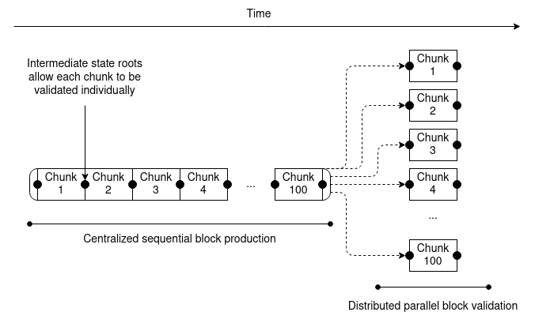
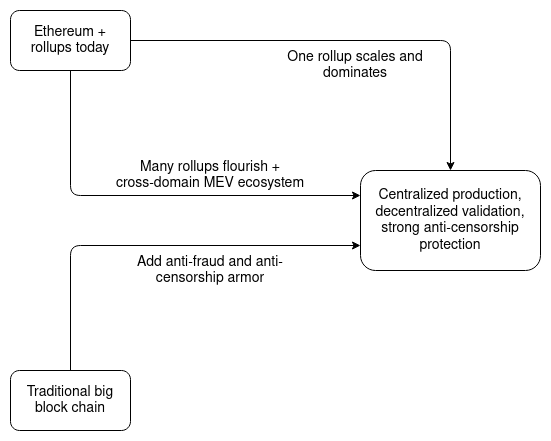
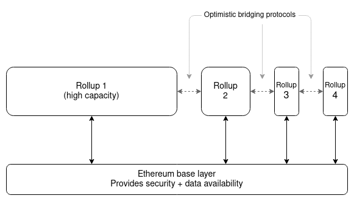
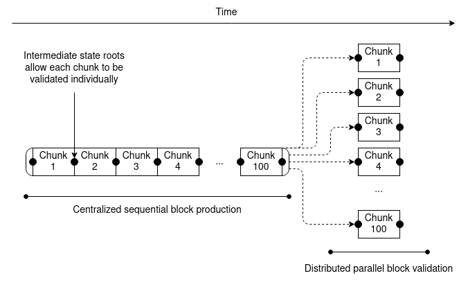
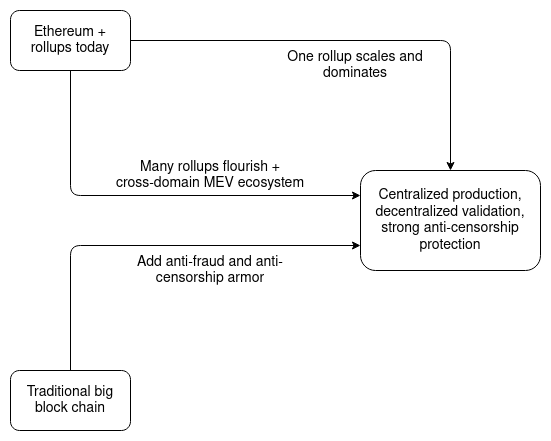
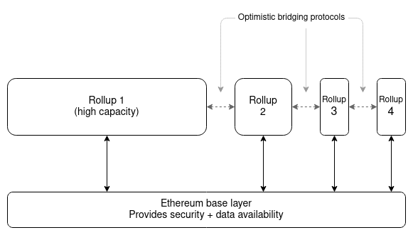

Endgame
2021 Dec 06
See all posts
Endgame
Special thanks to a whole bunch of people from Optimism and Flashbots for discussion and thought that went into this piece, and Karl Floersch, Phil Daian, Hasu and Alex Obadia for feedback and review.
Consider the average "big block chain" - very high block frequency, very high block size, many thousands of transactions per second, but also highly centralized: because the blocks are so big, only a few dozen or few hundred nodes can afford to run a fully participating node that can create blocks or verify the existing chain. What would it take to make such a chain acceptably trustless and censorship resistant, at least by my standards?
Here is a plausible roadmap:
- Add a second tier of staking, with low resource requirements, to do distributed block validation. The transactions in a block are split into 100 buckets, with a Merkle or Verkle tree state root after each bucket. Each second-tier staker gets randomly assigned to one of the buckets. A block is only accepted when at least 2/3 of the validators assigned to each bucket sign off on it.
- Introduce either fraud proofs or ZK-SNARKs to let users directly (and cheaply) check block validity. ZK-SNARKs can cryptographically prove block validity directly; fraud proofs are a simpler scheme where if a block has an invalid bucket, anyone can broadcast a fraud proof of just that bucket. This provides another layer of security on top of the randomly-assigned validators.
- Introduce data availability sampling to let users check block availability. By using DAS checks, light clients can verify that a block was published by only downloading a few randomly selected pieces.
- Add secondary transaction channels to prevent censorship. One way to do this is to allow secondary stakers to submit lists of transactions which the next main block must include.

What do we get after all of this is done? We get a chain where block production is still centralized, but block validation is trustless and highly decentralized, and specialized anti-censorship magic prevents the block producers from censoring. It's somewhat aesthetically ugly, but it does provide the basic guarantees that we are looking for: even if every single one of the primary stakers (the block producers) is intent on attacking or censoring, the worst that they could do is all go offline entirely, at which point the chain stops accepting transactions until the community pools their resources and sets up one primary-staker node that is honest.
Now, consider one possible long-term future for rollups...
Imagine that one particular rollup - whether Arbitrum, Optimism, Zksync, StarkNet or something completely new - does a really good job of engineering their node implementation, to the point where it really can do 10,000 transactions per second if given powerful enough hardware. The techniques for doing this are in-principle well-known, and implementations were made by Dan Larimer and others many years ago: split up execution into one CPU thread running the unparallelizable but cheap business logic and a huge number of other threads running the expensive but highly parallelizable cryptography. Imagine also that Ethereum implements sharding with data availability sampling, and has the space to store that rollup's on-chain data between its 64 shards. As a result, everyone migrates to this rollup. What would that world look like?

Once again, we get a world where, block production is centralized, block validation is trustless and highly decentralized, and censorship is still prevented. Rollup block producers have to process a huge number of transactions, and so it is a difficult market to enter, but they have no way to push invalid blocks through. Block availability is secured by the underlying chain, and block validity is guaranteed by the rollup logic: if it's a ZK rollup, it's ensured by SNARKs, and an optimistic rollup is secure as long as there is one honest actor somewhere running a fraud prover node (they can be subsidized with Gitcoin grants). Furthermore, because users always have the option of submitting transactions through the on-chain secondary inclusion channel, rollup sequencers also cannot effectively censor.
Now, consider the other possible long-term future of rollups...
No single rollup succeeds at holding anywhere close to the majority of Ethereum activity. Instead, they all top out at a few hundred transactions per second. We get a multi-rollup future for Ethereum - the Cosmos multi–chain vision, but on top of a base layer providing data availability and shared security. Users frequently rely on cross-rollup bridging to jump between different rollups without paying the high fees on the main chain. What would that world look like?
It seems like we could have it all: decentralized validation, robust censorship resistance, and even distributed block production, because the rollups are all invididually small and so easy to start producing blocks in. But the decentralization of block production may not last, because of the possibility of cross-domain MEV. There are a number of benefits to being able to construct the next block on many domains at the same time: you can create blocks that use arbitrage opportunities that rely on making transactions in two rollups, or one rollup and the main chain, or even more complex combinations.

A cross-domain MEV opportunity discovered by Western Gate
Hence, in a multi-domain world, there are strong pressures toward the same people controlling block production on all domains. It may not happen, but there's a good chance that it will, and we have to be prepared for that possibility. What can we do about it? So far, the best that we know how to do is to use two techniques in combination:
- Rollups implement some mechanism for auctioning off block production at each slot, or the Ethereum base layer implements proposer/builder separation (PBS) (or both). This ensures that at least any centralization tendencies in block production don't lead to a completely elite-captured and concentrated staking pool market dominating block validation.
- Rollups implement censorship-resistant bypass channels, and the Ethereum base layer implements PBS anti-censorship techniques. This ensures that if the winners of the potentially highly centralized "pure" block production market try to censor transactions, there are ways to bypass the censorship.
So what's the result? Block production is centralized, block validation is trustless and highly decentralized, and censorship is still prevented.

Three paths toward the same destination.
So what does this mean?
While there are many paths toward building a scalable and secure long-term blockchain ecosystem, it's looking like they are all building toward very similar futures. There's a high chance that block production will end up centralized: either the network effects within rollups or the network effects of cross-domain MEV push us in that direction in their own different ways. But what we can do is use protocol-level techniques such as committee validation, data availability sampling and bypass channels to "regulate" this market, ensuring that the winners cannot abuse their power.
What does this mean for block producers? Block production is likely to become a specialized market, and the domain expertise is likely to carry over across different domains. 90% of what makes a good Optimism block producer also makes a good Arbitrum block producer, and a good Polygon block producer, and even a good Ethereum base layer block producer. If there are many domains, cross-domain arbitrage may also become an important source of revenue.
What does this mean for Ethereum? First of all, Ethereum is very well-positioned to adjust to this future world, despite the inherent uncertainty. The profound benefit of the Ethereum rollup-centric roadmap is that it means that Ethereum is open to all of the futures, and does not have to commit to an opinion about which one will necessarily win. Will users very strongly want to be on a single rollup? Ethereum, following its existing course, can be the base layer of that, automatically providing the anti-fraud and anti-censorship "armor" that high-capacity domains need to be secure. Is making a high-capacity domain too technically complicated, or do users just have a great need for variety? Ethereum can be the base layer of that too - and a very good one, as the common root of trust makes it far easier to move assets between rollups safely and cheaply.
But also, Ethereum researchers should think hard about what levels of decentralization in block production are actually achievable. It may not be worth it to add complicated plumbing to make highly decentralized block production easy if cross-domain MEV (or even cross-shard MEV from one rollup taking up multiple shards) make it unsustainable regardless.

What does this mean for big block chains? There is a path for them to turn into something trustless and censorship resistant, and we'll soon find out if their core developers and communities actually value censorship resistance and decentralization enough for them to do it!
It will likely take years for all of this to play out. Sharding and data availability sampling are complex technologies to implement. It will take years of refinement and audits for people to be fully comfortable storing their assets in a ZK-rollup running a full EVM. And cross-domain MEV research too is still in its infancy. But it does look increasingly clear how a realistic but bright future for scalable blockchains is likely to emerge.
Endgame
2021 Dec 06 See all postsSpecial thanks to a whole bunch of people from Optimism and Flashbots for discussion and thought that went into this piece, and Karl Floersch, Phil Daian, Hasu and Alex Obadia for feedback and review.
Consider the average "big block chain" - very high block frequency, very high block size, many thousands of transactions per second, but also highly centralized: because the blocks are so big, only a few dozen or few hundred nodes can afford to run a fully participating node that can create blocks or verify the existing chain. What would it take to make such a chain acceptably trustless and censorship resistant, at least by my standards?
Here is a plausible roadmap:

What do we get after all of this is done? We get a chain where block production is still centralized, but block validation is trustless and highly decentralized, and specialized anti-censorship magic prevents the block producers from censoring. It's somewhat aesthetically ugly, but it does provide the basic guarantees that we are looking for: even if every single one of the primary stakers (the block producers) is intent on attacking or censoring, the worst that they could do is all go offline entirely, at which point the chain stops accepting transactions until the community pools their resources and sets up one primary-staker node that is honest.
Now, consider one possible long-term future for rollups...
Imagine that one particular rollup - whether Arbitrum, Optimism, Zksync, StarkNet or something completely new - does a really good job of engineering their node implementation, to the point where it really can do 10,000 transactions per second if given powerful enough hardware. The techniques for doing this are in-principle well-known, and implementations were made by Dan Larimer and others many years ago: split up execution into one CPU thread running the unparallelizable but cheap business logic and a huge number of other threads running the expensive but highly parallelizable cryptography. Imagine also that Ethereum implements sharding with data availability sampling, and has the space to store that rollup's on-chain data between its 64 shards. As a result, everyone migrates to this rollup. What would that world look like?
Once again, we get a world where, block production is centralized, block validation is trustless and highly decentralized, and censorship is still prevented. Rollup block producers have to process a huge number of transactions, and so it is a difficult market to enter, but they have no way to push invalid blocks through. Block availability is secured by the underlying chain, and block validity is guaranteed by the rollup logic: if it's a ZK rollup, it's ensured by SNARKs, and an optimistic rollup is secure as long as there is one honest actor somewhere running a fraud prover node (they can be subsidized with Gitcoin grants). Furthermore, because users always have the option of submitting transactions through the on-chain secondary inclusion channel, rollup sequencers also cannot effectively censor.
Now, consider the other possible long-term future of rollups...
No single rollup succeeds at holding anywhere close to the majority of Ethereum activity. Instead, they all top out at a few hundred transactions per second. We get a multi-rollup future for Ethereum - the Cosmos multi–chain vision, but on top of a base layer providing data availability and shared security. Users frequently rely on cross-rollup bridging to jump between different rollups without paying the high fees on the main chain. What would that world look like?
It seems like we could have it all: decentralized validation, robust censorship resistance, and even distributed block production, because the rollups are all invididually small and so easy to start producing blocks in. But the decentralization of block production may not last, because of the possibility of cross-domain MEV. There are a number of benefits to being able to construct the next block on many domains at the same time: you can create blocks that use arbitrage opportunities that rely on making transactions in two rollups, or one rollup and the main chain, or even more complex combinations.
A cross-domain MEV opportunity discovered by Western Gate
Hence, in a multi-domain world, there are strong pressures toward the same people controlling block production on all domains. It may not happen, but there's a good chance that it will, and we have to be prepared for that possibility. What can we do about it? So far, the best that we know how to do is to use two techniques in combination:
So what's the result? Block production is centralized, block validation is trustless and highly decentralized, and censorship is still prevented.

Three paths toward the same destination.
So what does this mean?
While there are many paths toward building a scalable and secure long-term blockchain ecosystem, it's looking like they are all building toward very similar futures. There's a high chance that block production will end up centralized: either the network effects within rollups or the network effects of cross-domain MEV push us in that direction in their own different ways. But what we can do is use protocol-level techniques such as committee validation, data availability sampling and bypass channels to "regulate" this market, ensuring that the winners cannot abuse their power.
What does this mean for block producers? Block production is likely to become a specialized market, and the domain expertise is likely to carry over across different domains. 90% of what makes a good Optimism block producer also makes a good Arbitrum block producer, and a good Polygon block producer, and even a good Ethereum base layer block producer. If there are many domains, cross-domain arbitrage may also become an important source of revenue.
What does this mean for Ethereum? First of all, Ethereum is very well-positioned to adjust to this future world, despite the inherent uncertainty. The profound benefit of the Ethereum rollup-centric roadmap is that it means that Ethereum is open to all of the futures, and does not have to commit to an opinion about which one will necessarily win. Will users very strongly want to be on a single rollup? Ethereum, following its existing course, can be the base layer of that, automatically providing the anti-fraud and anti-censorship "armor" that high-capacity domains need to be secure. Is making a high-capacity domain too technically complicated, or do users just have a great need for variety? Ethereum can be the base layer of that too - and a very good one, as the common root of trust makes it far easier to move assets between rollups safely and cheaply.
But also, Ethereum researchers should think hard about what levels of decentralization in block production are actually achievable. It may not be worth it to add complicated plumbing to make highly decentralized block production easy if cross-domain MEV (or even cross-shard MEV from one rollup taking up multiple shards) make it unsustainable regardless.

What does this mean for big block chains? There is a path for them to turn into something trustless and censorship resistant, and we'll soon find out if their core developers and communities actually value censorship resistance and decentralization enough for them to do it!
It will likely take years for all of this to play out. Sharding and data availability sampling are complex technologies to implement. It will take years of refinement and audits for people to be fully comfortable storing their assets in a ZK-rollup running a full EVM. And cross-domain MEV research too is still in its infancy. But it does look increasingly clear how a realistic but bright future for scalable blockchains is likely to emerge.